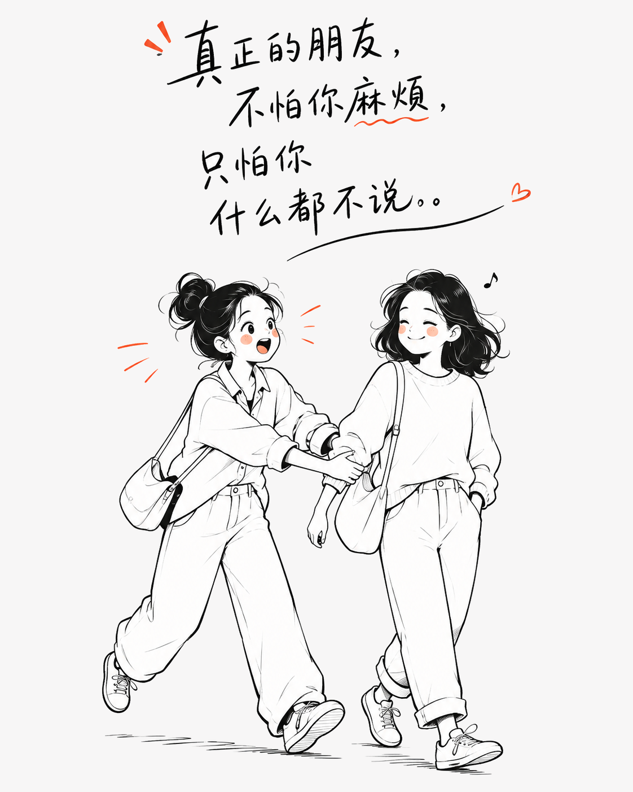
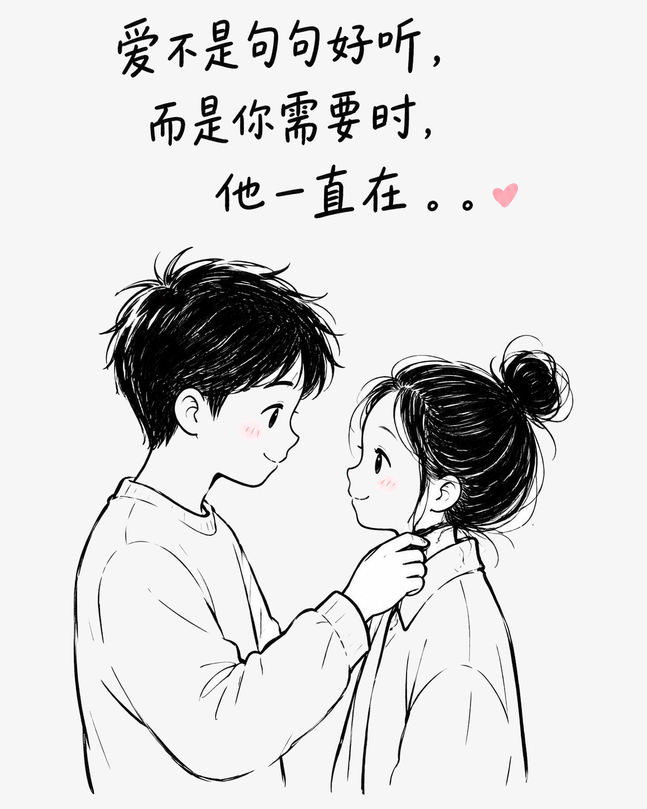
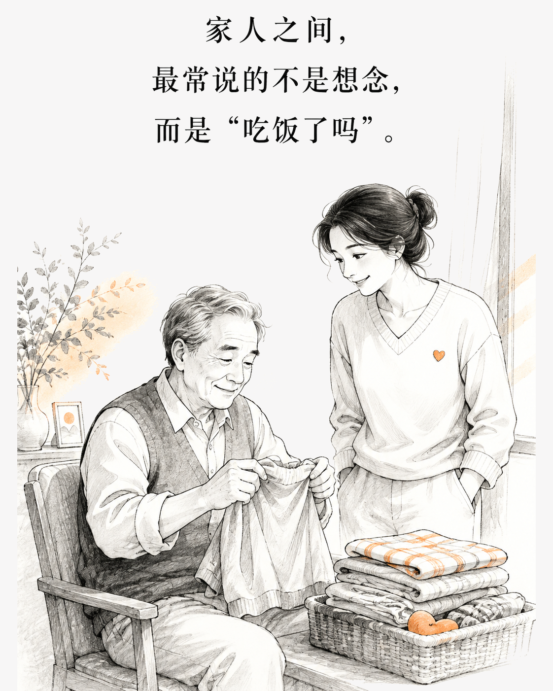

真正亲近的人，都藏在日常的小事里
有些关系不靠漂亮话维系，而是在你需要时，愿意多走一步；在彼此拌嘴后，依然把牵挂放进行动里。
人与人的亲近，往往不在于说了多少温柔的话，而在于那些看似随手、其实一直记得的照顾。
朋友的默契，是嘴上嫌弃，脚下却很快
你临时出门，把宠物和家里的琐事交给朋友，她可能先抱怨几句，转身却把事情安排妥当。你搬家时，她一边喊累，一边把最重的箱子扛上楼；你手头紧，她不会反复追问，只会先帮你撑过眼前。朋友之间未必事事算得分明，但总有人愿意在你开口前，提前留出位置。

伴侣的体贴，常常披着不耐烦的外衣
他嘴上说你总爱折腾，夜里却会把热饭送到楼下；你情绪低落时，他未必擅长安慰，却会默默把家务接过去。两个人生活久了，感谢不一定挂在嘴边，分工和照料却早已形成习惯。愿意接住彼此的小麻烦，才是关系里踏实的浪漫。

家人的牵挂，总藏在熟悉的唠叨里
家人最容易让人烦，也最难真正放下。父母会念你吃得少、休息晚，转头却把饭菜和生活费准备好；兄弟姐妹平时互相打趣，遇到大事仍会尽力搭把手。家里的账目可以一笔笔核对，感情却从来不是简单的收支关系。

值得珍惜的关系，不是永远没有摩擦，而是摩擦之后仍愿意靠近。那些没有被说出口的照顾，往往才是最可靠的在乎。